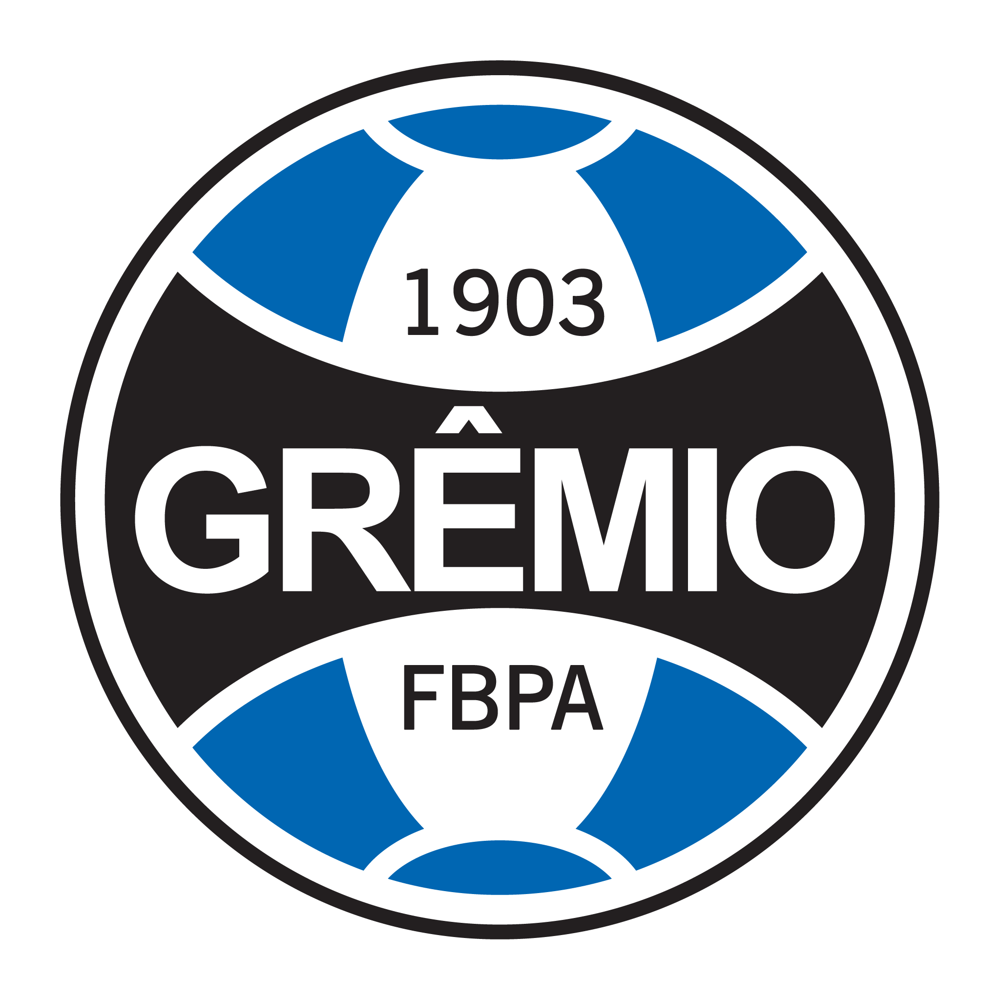
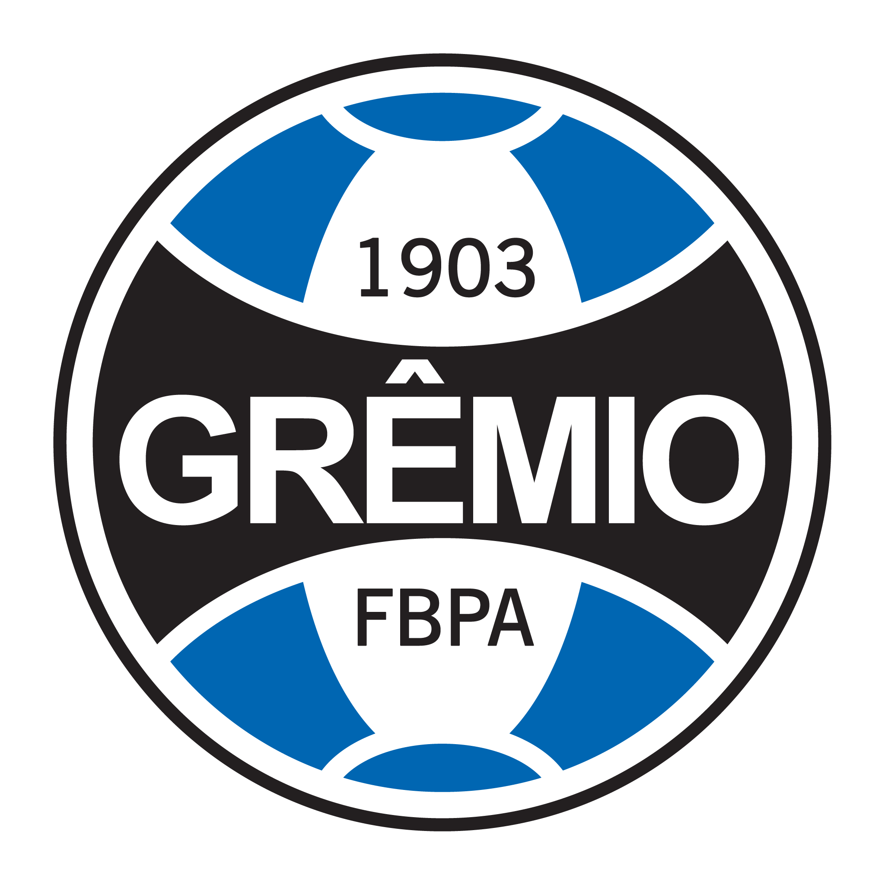
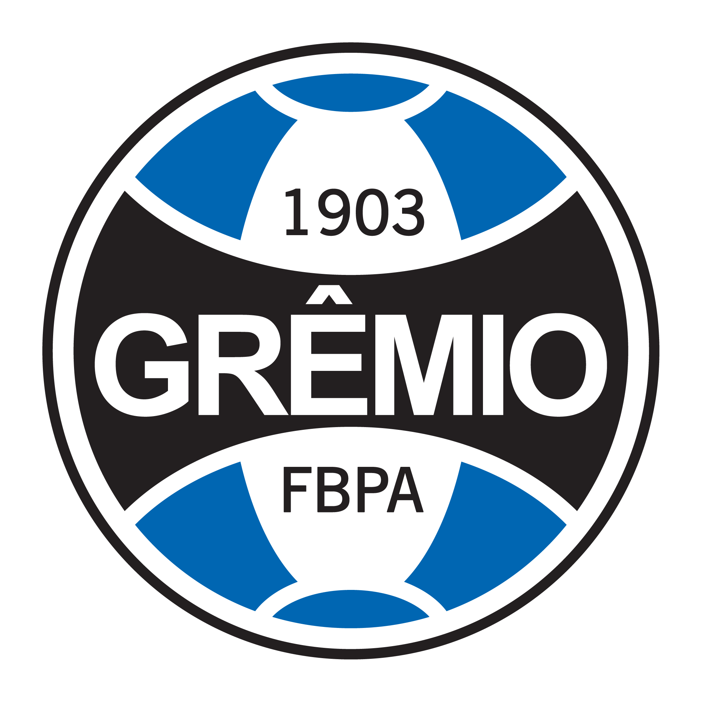
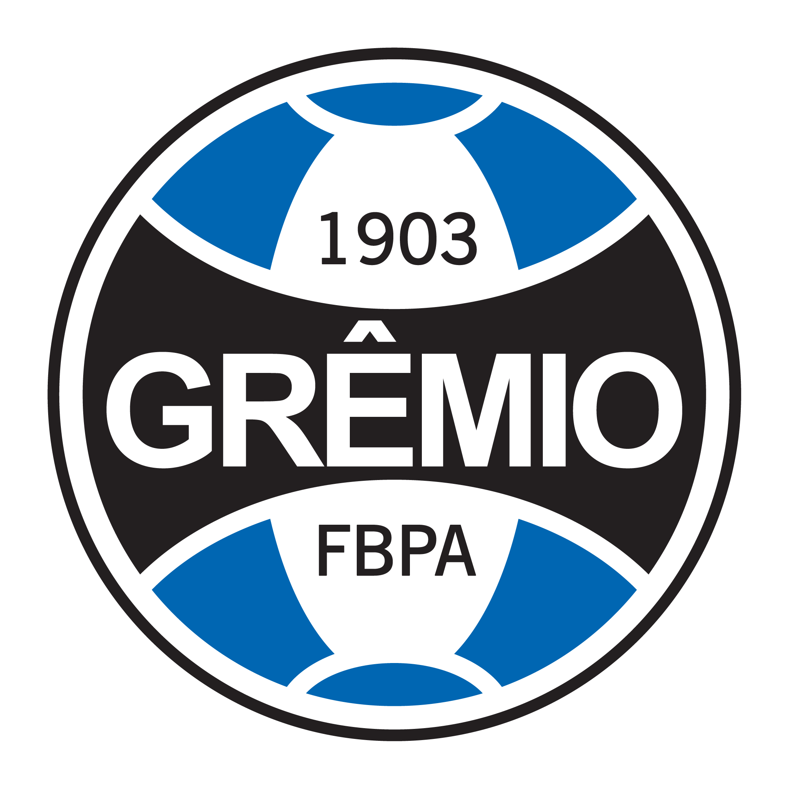
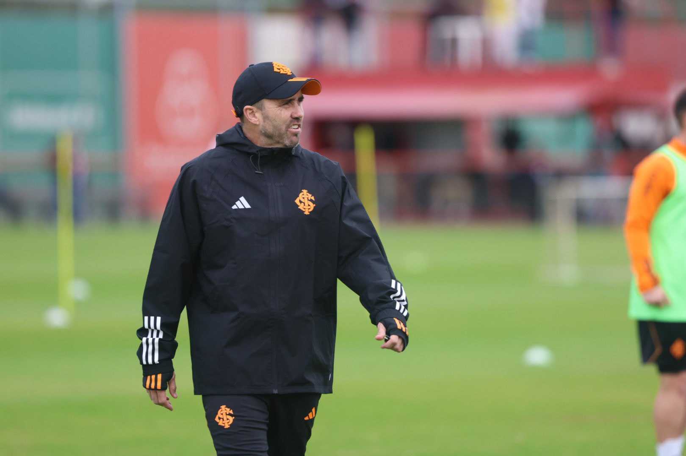
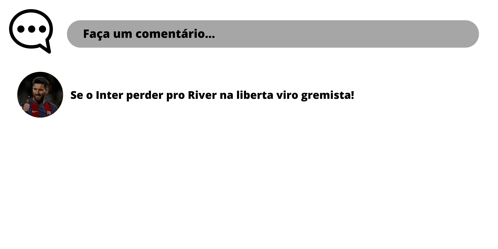

O Internacional terá a primeira decisão contra o River Plate, na próxima terça-feira (1), no Monumental de Núñez, pelas oitavas de final da Copa Libertadores. Em busca do tricampeonato continental, o Colorado acredita que o técnico Eduardo Coudet tem as condições necessárias para garantir a classificação contra um dos times mais ricos da América do Sul.
A ESPN da Argentina iniciou as primeiras discussões sobre o confronto e resolveu entrevistar um antigo auxiliar técnico de Coudet. Diego Monarriz, profissional que esteve junto com Chacho no Atlético Mineiro, abriu o jogo sobre a saída de Mano Menezes e consequente mudança de postura do Colorado com o novo treinador.
“Com Chacho vai ser completamente diferente. Já conhecemos as equipes dele. Protagonista, ela vai atacar. É uma mudança de mentalidade quando você diz para um jogador atuar de uma maneira ou de outra. Quando você dá liberdade, o jogador mostra seu esplendor e ganha confiança”, explicou o ex-auxiliar técnico de Coudet.
Desta forma, o entendimento é de que o Internacional vai tentar jogar de igual pra igual com o River Plate. A equipe não vai ceder espaços para os argentinos e buscará a vitória no Monumental de Núñez. A informação foi confirmada pelo lateral-direito Fabricio Bustos, que também falou sobre o tema em entrevista para a ESPN da Argentina.
“Estamos passando por uma mudança de ideia e creio que vamos ao Monumental jogar de igual para igual. Vocês conhecem bastante o Chacho. Ele passou muitos anos na Argentina e vocês sabem como jogam as equipes do Coudet. Então, creio que vamos jogar de igual para igual”, salientou o defensor do Colorado.
Antes de encarar a partida decisiva contra o River Plate, o Internacional fechou a última semana cheia de preparação com o técnico Eduardo Coudet. A equipe teve um teste final contra o Cuiabá, no sábado (29), em confronto disputado no Estádio Beira-Rio, pela 17ª rodada do Campeonato Brasileiro.
